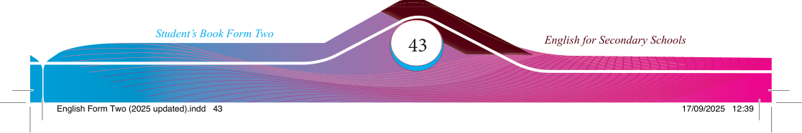

(c) Reread the dialogue in (b) and write a passage describing the incident. Use the same names as in the dialogue.
(d) Create a dialogue using the present perfect and present perfect continuous tenses.
Use the following questions to guide you.
1. How long have you been learning English?
2. Have you ever travelled to a different country? What was it like?
3. What have you been doing since morning?
4. Have you watched the Titanic fi lm? What do you think of it?
5. Have you completed your homework?
6. How long have you been living in your current home?
7. Have you been practising any sports or hobbies recently?
8. How many books have you read this month?
9. Have you tried new food and ended up loving it?
10. How long have you and your best friend known each other?
(e) Choose any of the following titles and compose a written narrative of not more than 100 words. Ensure that your narrative incorporates the present perfect and present perfect continuous tenses.
1. A day I will never forget
2. How I overcame my greatest fear
3. The best surprise I ever received
4. The unexpected friend I made
5. The time I helped someone in need